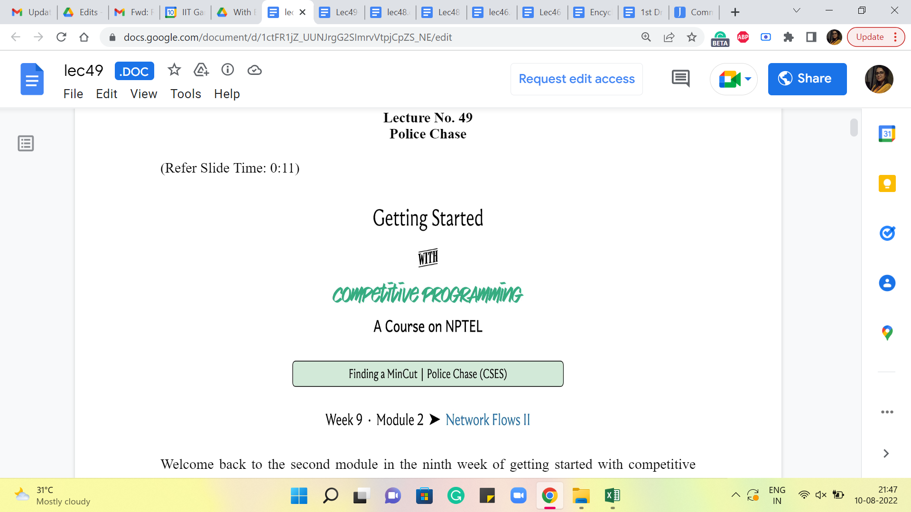
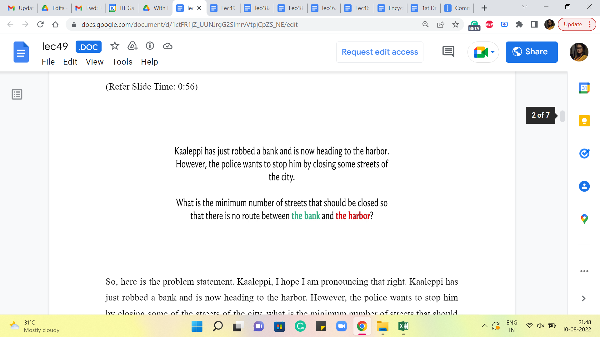
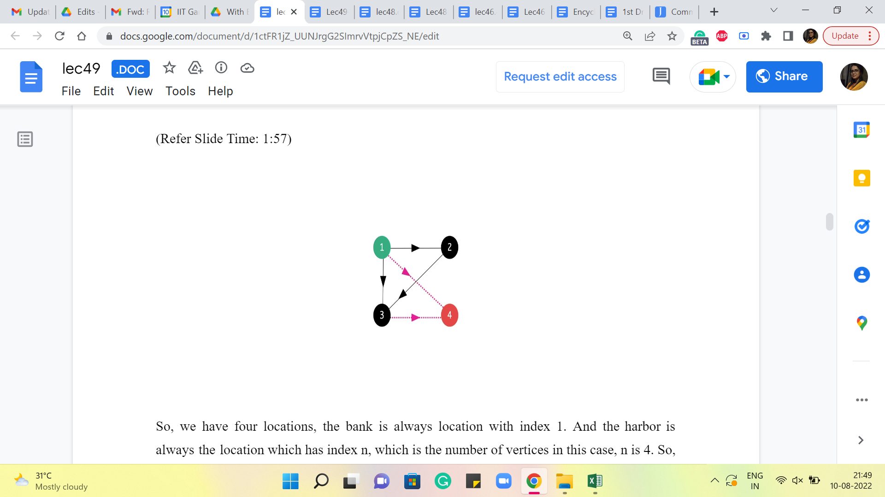
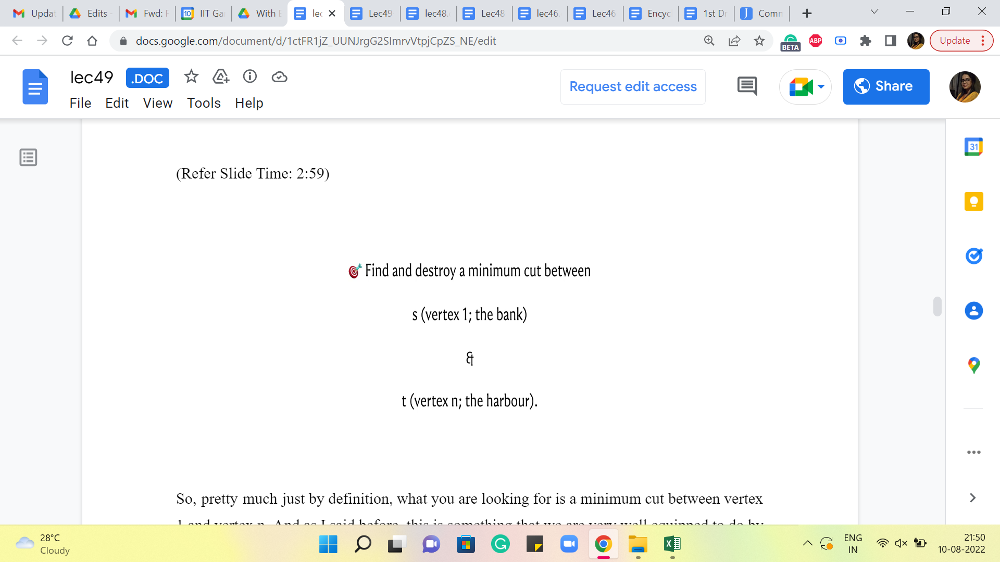
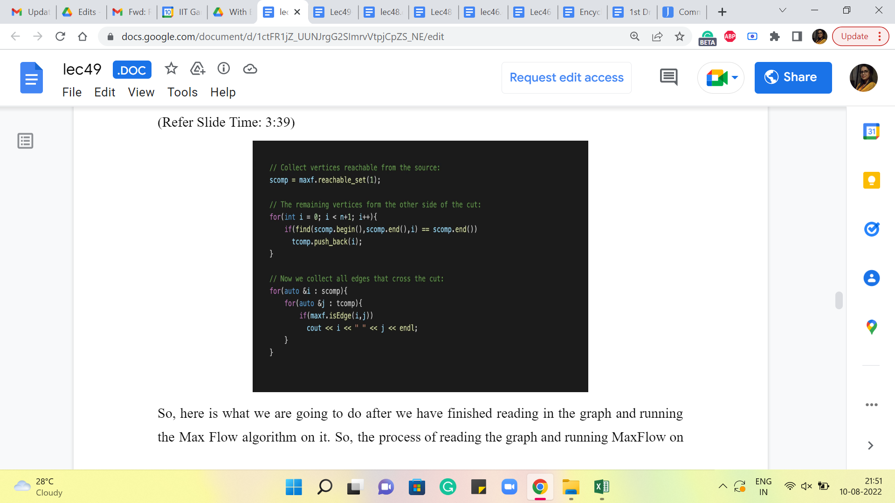
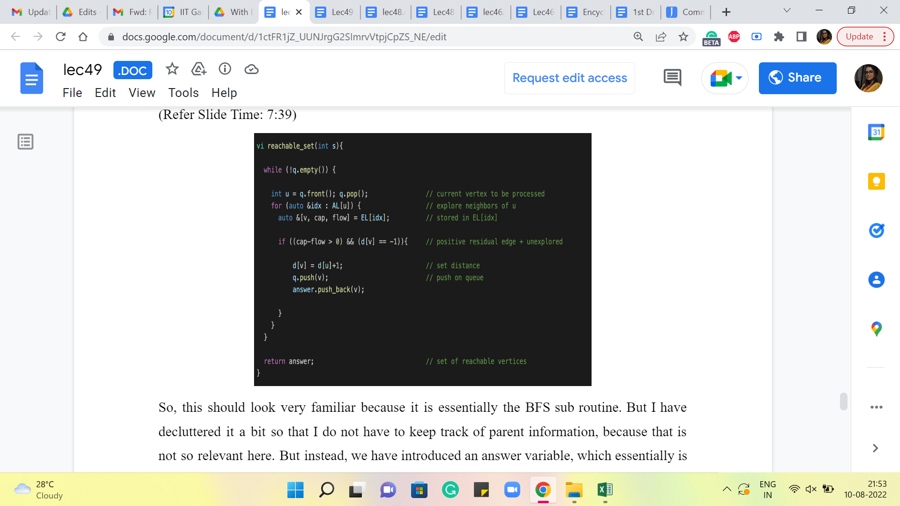

Police Chase
Lecture - 49
Police Chase
(Refer Slide Time: 0:11)

Welcome back to the second module in the ninth week of Getting Started with Competitive Programming. So, in the previous module, we just saw (about) the deep relationship between the value of a maximum flow in a flow network and the capacity of a minimum cut in the same network. In this short follow-up module, I want to talk about a problem that will give us an opportunity to implement the minimum cut algorithm that we hinted at last time.
So, this one is called ‘police chase.’ It is a problem that you can find in the graph section of CSES. If this is the first time you are solving a problem on the CSES platform, you will need to set up an account, but that is very quick and easy to do. So, there is, as always, a link to the problem in the description of this video. So, I hope that you can check it out and follow along.
(Refer Slide Time: 0:56)

So, here is the problem statement. Kaaleppi, I hope I am pronouncing that right. Kaaleppi has just robbed a bank and is now heading to the harbor. However, the police want to stop him by closing some of the streets of the city. What is the minimum number of streets that should be closed so that there is no route between the bank and the harbor? So, I am going to assume that our friend is just finished robbing the bank and is at the source vertex, which corresponds to the bank here, and the police want to shut off some of the roads so that no matter what our friend does, he is not going to be able to reach the harbor.
So, you can probably already see where this is going. You want to model the streets in the city as some sort of a flow network. And you want to think of the bank as the source and the harbor as the target. And, of course, your goal of closing off the smallest number of streets so as to cut off all the connections from the bank to the harbor is going to correspond to a minimum cut in this flow network. Let us take a look at the example that is given as the sample input in the problem statement.
(Refer Slide Time: 1:57)

So, we have four locations. The bank is always the location with index 1. And the harbor is always the location which has index n, which is the number of vertices. In this case, n is 4. So, the source and the target are shown as the green and the red vertices here. The remaining edges are as shown. And if you like, you can pause here for a moment to think about what would be the best solution in terms of what would be the smallest number of roads that you can remove to disconnect the bank from the harbor.
Alright. If you stare at this for a minute, you can probably conclude that it is not enough to remove just one edge. You could try each edge in turn, for instance, and realize that you are going to need at least two edges to disconnect the source from the target in this example. And it turns out that two edges are in fact enough. So, for example, you could try to delete these two edges here. And you will see that once you do that, you disconnect the harbor from the bank.
(Refer Slide Time: 2:59)

So, pretty much just by definition, what you are looking for is a minimum cut between vertex-1 and vertex n. And as I said before, this is something that we are very well equipped to do by now because we already have an implementation of the Ford-Fulkerson algorithm. So, the idea is to find a maximum flow, and then look at the residual graph that you obtain at the end of this process. And look at all the vertices that are reachable from the source. And that is going to be your minimum cut. And what you want to return is the edges that cross this cut. So, let us take a look at how we are going to do this in the implementation.
(Refer Slide Time: 3:39)

So, here is what we are going to do after we have finished reading (in) the graph and running the Max Flow algorithm on it. So, the process of reading the graph (in) and running Max Flow on it is completely straightforward. The input is given in a very convenient way. So, you just have to keep reading the edges and adding them to your Max Flow object. And you can simply invoke the Edmonds Karp function after you have built up the graph. So I am not showing you that part of the code.
But in case you would like to take a look, you can find it in the usual place in the official repository. And there is a link in the description as always. So, after (all) this is done, what we want to do is find the set of vertices that are reachable from the source vertex, which in this case is the vertex labeled 1. So, we are going to do this using a helper function called reachable_set.
And I am going to talk about how reachable_set is implemented in just a moment. But again, if this is something that you want to try and do on your own, it is a very good exercise. All you have to do is copy-paste the BFS implementation, and just introduce a variable that can keep track of all the vertices that you encounter in the process of running the BFS from the source vertex. So, feel free to try that out on your own. This would be a good point to pause the video and play around with your own implementation, and you could come back and exchange notes.
So, let us say that we have some implementation of reachable_set. As I said, we are going to get to that next. But let us suppose that we stored in the variable ‘scomp,’ the set of all vertices that are reachable from the source. Now, the next thing that we do is run a little loop that goes through all the vertices, and figures out, which (are the ones that) do not belong to ‘scomp.’ This will be the set ‘t.’ The reason we want to build out ‘t’ explicitly is because it is just going to help us identify all the edges that cross the cut, which is, in fact, the solution that we are interested in.
Notice that in the police chase problem, you are actually asked to output a set of edges corresponding to streets that the police can block off. So, if you just had to output the number of streets that need to be blocked off, you do not need to do any of this, you can simply return the value of the Max Flow, and you would be done. However, in this problem, and in many problems of this kind, you are often asked to explicitly output some valid solution.
And fortunately, as we have discussed, the Ford–Fulkerson algorithm automatically gives us access to a minimum cut. And all that remains to be done is to identify all the edges that are crossing this cut. Now, of course, to do this, you do not have to explicitly identify the set ‘t’ like I am doing here. You could instead simply loop over all the vertices in s, look at the edges that are incident on these vertices, and identify all those edges that have their other endpoints, essentially not being in s.
And that is an alternate way to discover all the edges that are crossing the cut. I just found this more convenient to just interpret visually. So, that is why I am doing it this way. So, the first for loop here essentially identifies all of those vertices that do not belong to ‘scomp,’ which is the part of the graph that is reachable from s in the last residual graph from Ford–Fulkerson. And this essentially constitutes our set ‘t,’ which we are calling ‘tcomp’ here.
Finally, what we do is run a nested pair of ‘for’ loops, which essentially goes through all pairs of vertices, such that one of them is in s and the others in t. I have written a small helper function that just tells me whether a pair of vertices is an edge or not. So, if ‘i comma j’ is an edge, and i is in ‘s,’ and j is in ‘t,’ then I am going to add this to my cut. In this case, I am just printing it out directly.
But you could also store it in a solution in case you need to use the cut for something else going forward. For this problem, it is just enough to print this list of edges, and you are done. Now, let us just take a quick look at how reachable_set works.
(Refer Slide Time: 7:39)

So, this should look very familiar because it is essentially the BFS sub-routine. But I have decluttered it a bit so that I do not have to keep track of parent information because that is not so relevant here. But instead, we have introduced an ‘answer’ variable, which essentially is going to just keep track of all the vertices that we meet as we do this BFS.
So, every time we see a new vertex, just after we push it back on the queue, we also add it to the answer vector. And we just return ‘answer’ that is the set of all the vertices that are reachable from s. By the way, if you are just following along on the video and writing your code, as we discuss, then notice that there are parts of this function that are missing. So, in particular, all of the initialization is missing.
And you will need to declare the variables. Make sure that the queue has the word access, to begin with and that the distance vector has been initialized appropriately. And that the distance of the source vertex is set to 0. So, these are a few things that you do not see on the slide. But you can once again find the complete code in a link that is there in the description. So, you can refer to that instead if you are looking for a fully workable code, but ideally, you are just trying to write this out yourself as well. Just for good practice.
However you choose to do it, I hope that you end up with a working implementation that makes you feel confident about tackling problems that are based on MinCut going forward. In the last module for this week, which is coming up next, we will look at a slightly more sophisticated application of MinCut. And while we are at it, we are going to learn about another fundamental and truly beautiful duality theorem in graph theory. So, I cannot wait to tell you about that. We will see you in the next video. Thanks for watching!